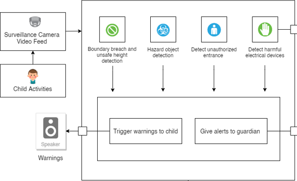
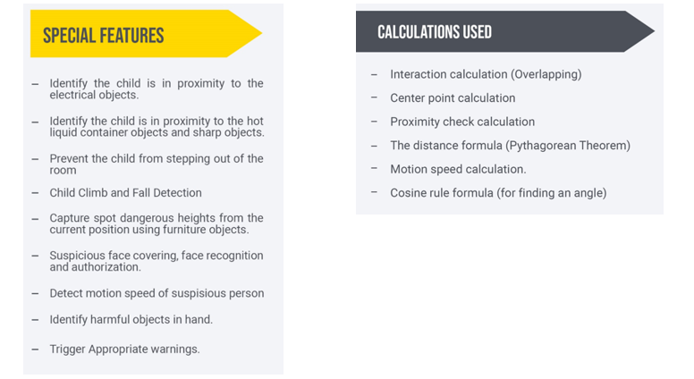
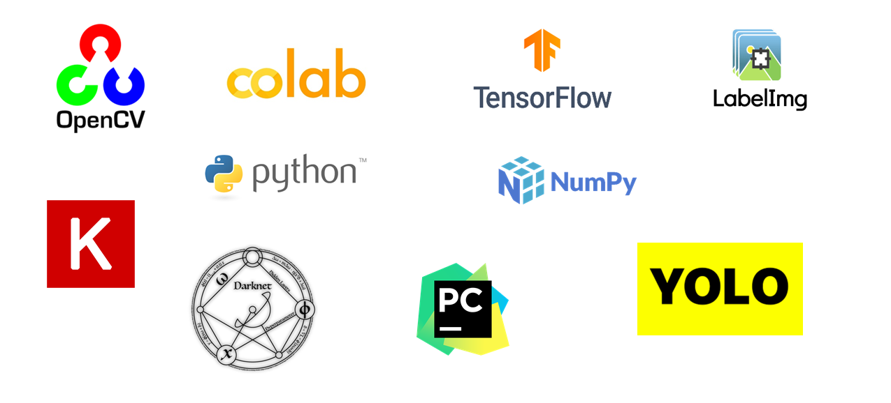

<!DOCTYPE html>
<html lang="en">

<head>
  <meta charset="utf-8">
  <meta content="width=device-width, initial-scale=1.0" name="viewport">

  <title>AI Care</title>
  <meta content="" name="descriptison">
  <meta content="" name="keywords">

  <!-- Favicons -->
  <link href="assets/img/maptiler-icon.svg" rel="icon">
  <link href="assets/img/apple-touch-icon.PNG" rel="apple-touch-icon">

  <!-- Google Fonts -->
  <link href="https://fonts.googleapis.com/css?family=Open+Sans:300,300i,400,400i,600,600i,700,700i|Roboto:300,300i,400,400i,500,500i,600,600i,700,700i|Poppins:300,300i,400,400i,500,500i,600,600i,700,700i" rel="stylesheet">

  <!-- Vendor CSS Files -->
  <link href="assets/vendor/bootstrap/css/bootstrap.min.css" rel="stylesheet">
  <link href="assets/vendor/icofont/icofont.min.css" rel="stylesheet">
  <link href="assets/vendor/boxicons/css/boxicons.min.css" rel="stylesheet">
  <link href="assets/vendor/animate.css/animate.min.css" rel="stylesheet">
  <link href="assets/vendor/owl.carousel/assets/owl.carousel.min.css" rel="stylesheet">
  <link href="assets/vendor/venobox/venobox.css" rel="stylesheet">
  <link href="assets/vendor/aos/aos.css" rel="stylesheet">

  <!-- Template Main CSS File -->
  <link href="assets/css/style.css" rel="stylesheet">
  <link href="assets/css/timeline.css" rel="stylesheet">

  <!-- =======================================================
  * Template Name: Medicio - v2.0.0
  * Template URL: https://bootstrapmade.com/medicio-free-bootstrap-theme/
  * Author: BootstrapMade.com
  * License: https://bootstrapmade.com/license/
  ======================================================== -->
  
  <style>
.dropbtn {
  background-color: #4CAF50;
  color: white;
  padding: 16px;
  font-size: 16px;
  border: none;
}

.dropdown {
  position: relative;
  display: inline-block;
}

.dropdown-content {
  display: none;
  position: absolute;
  background-color: #f1f1f1;
  min-width: 150px;
  box-shadow: 0px 8px 16px 0px rgba(0,0,0,0.2);
  z-index: 1;
}

.dropdown-content a {
  color: black;
  padding: 10px 16px;
  text-decoration: none;
  display: block;
}

.dropdown-content a:hover {background-color: #ddd;}

.dropdown:hover .dropdown-content {display: block;}

.dropdown:hover .dropbtn {background-color: #3e8e41;}


</style>
  
  
</head>

<body>

  <!-- ======= Top Bar ======= -->
  <div id="topbar" class="d-none d-lg-flex align-items-center fixed-top">
    <div class="container d-flex align-items-center justify-content-between">
      <div class="d-flex align-items-center">
         AI CARE - HARMFUL CHILD ACTIVITY DETECTION AND PREVENTION ASSISTANCE SYSTEM.
      </div>
      
    </div>
  </div>

  <!-- ======= Header ======= -->
  <header id="header" class="fixed-top">
    <div class="container d-flex align-items-center">

      <a href="index.html" class="logo mr-auto"><b>AI CARE</b></a>
      <!-- Uncomment below if you prefer to use an image logo -->
      <!-- <h1 class="logo mr-auto"><a href="index.html">Medicio</a></h1> -->

      <nav class="nav-menu d-none d-lg-block">
        <ul>
          <li class="active"><a href="index.html">Home</a></li>
          <li ><a href="#featured-services">Domain</a></li>
           <li ><a href="#Milestones">MileStone</a></li>
          
          <li><a href="#Documents">Documents</a></li>
          <li><a href="#Presentation">Presentations</a></li>
          <li><a href="#AboutUs">About us</a></li>
          <li><a href="#gallery">Achievements</a></li>
          <li><a href="#contact">Contact</a></li>

        </ul>
      </nav><!-- .nav-menu -->

    </div>
  </header><!-- End Header -->

  <!-- ======= Hero Section ======= -->
  <section id="hero">
    <div id="heroCarousel" class="carousel slide carousel-fade" data-ride="carousel">

      <ol class="carousel-indicators" id="hero-carousel-indicators"></ol>

      <div class="carousel-inner" role="listbox">

        <!-- Slide 1 -->
        <div class="carousel-item active" style="background-image: url(assets/img/slide/slide-1.PNG)">
          <div class="container">
            <h2>Welcome to <span>AI Care</span></h2>
            <p>AI Care is a computer vision-based system to prevent falls, leaving safe zones, cuts and burns, kidnap and electric shock related to children in an identified domestic space.</p>
            <a href="#featured-services" class="btn-get-started scrollto">Read More</a>
          </div>
        </div>

      </div>

      <a class="carousel-control-prev" href="#heroCarousel" role="button" data-slide="prev">
        <span class="carousel-control-prev-icon icofont-simple-left" aria-hidden="true"></span>
        <span class="sr-only">Previous</span>
      </a>

      <a class="carousel-control-next" href="#heroCarousel" role="button" data-slide="next">
        <span class="carousel-control-next-icon icofont-simple-right" aria-hidden="true"></span>
        <span class="sr-only">Next</span>
      </a>

    </div>
  </section><!-- End Hero -->

  <main id="main">
  
    <!-- ======= Featured Services Section ======= -->
    
    
    <section id="featured-services" class="featured-services">
 <div class="container" data-aos="fade-up">


<div >

<h3 align="center">Why AI Care?</h3>
                     
          <div align="center">  
          
                         
 
</div>

<br><hr color="#8080ff">

<h3 align="center">Specialty AI Care</h3>
                     
          <div align="center">  
          
                         
 
</div>

<br><hr color="#8080ff">

</div>

<div data-aos-delay="100">

<h3 align="center">Literature survey</h3>
                     
          <div>                  
 <dl>
   <p>Child accidents have become a great concern in the 
    contemporary world due to the high rate of serious injuries 
    and deaths caused. And the same can be proven by both 
    research results and evidence such as cctv footages 
    collected from various locations. The implemented 
    research consists of four main features that could provide 
    a solution to the explained problem as it helps to both 
    detect and prevent incidents that could negatively affect 
    child safety
    </p>

    <h5>Child Safety Zone breachers, climb and fall Detection</h5>

  <p>Child climbing to a dangerous position, leaving the safe 
    zone boundary of the room, and fells are the most leading 
    cause of accidental injury to young children. Some falls 
    can result in death or long-term disability
    To deal with those problems, various types of 
    approaches have been taken. One option is to wear a sensor 
    that detects the acceleration of the falls and these Wearable 
    fall detectors are the most affordable and widely used form 
    of fall detectors. These Wearable 
    devices are selected for their low cost and higher 
    efficiency. However, if the parent forgot to wear the sensor 
    to the child, no falls can be detected even when the incident 
    happened. So, this approach fails to address user’s 
    acceptability issues. And also, has several 
    drawbacks. For instance, those method suggests that the 
    worn device retains a fixed relative relation with the wearer 
    and this condition can easily be broken.To address these challenges, computer-based vision 
    approaches can be used so that do not require the child to 
    wear anything. Another reason for using a computer-based vision approach is that a Surveillance camera can 
    grant more data and accuracy than the accelerometer in the 
    motion of an actions. Over the past years, some 
    developments have been carried out on computer visionbased fall detection. Those systems are unable to 
    differentiate between a real fall action and an incident in 
    which a person suddenly sitting down or lying.</p>

    <p>Based on the literature review performed there weren’t 
      any fall detection solutions specifically implemented 
      targeting children even though there are some solutions to 
      detect the action of falling for adults. Also, when 
      considering climb detection there were no systems 
      encapsulating features like flagging falls caused due to 
      furniture, identifying safety zone and also capturing 
      breaching of the specified boundary<p>

    <h5>Child Kidnap Detection and Prevention</h5>

    <p>There are many facts that can be considered when 
      determining a kidnap is taking place. Popular researches
      on kidnap detection have considered the following facts to
      identify an ongoing kidnap such as Kidnap by vehicles, Abnormal poses when being kidnapped, Framebased classification for kidnap and normal accompanying.
      Unexpected movements for the target during kidnap. Most
      of the researches conducted consider abnormal poses as a 
      fact when detecting a kidnap.
      There are researches which depicts kidnap detection 
      and prevention aid centralizing a robot’s pose and in a 
      limited area space. In this situation kidnap detections for 
      real-time abductions have come into need.Other products may rely on biometric features such as 
      Fingerprint Recognition for children in which the 
      children’s scanned fingerprints are obtained using an 
      acquisition device. It uses image processing to 
      enhance the information on the image and feature 
      extraction to encode the found information. The 
      disadvantage of this approach is that it is not automatic and 
      difficult for young children to use the acquisition device 
      and correctly place their fingers on it. This may lead to 
      inaccurate identifications and verifications.</p>

    
      <p>All of these available research papers
        detect kidnaps on activities that happened during the 
        kidnap is happening and then after proceed to alert or 
        notify the responsible authorities. This does not mitigate 
        the risk of danger of kidnap. states that children face 
        critical mental and physical breakdowns after suffering a 
        kidnap. In such a background allowing a person to be 
        kidnapped for at least a least amount of time cannot be 
        afforded for a child life. Therefore, a common insight these 
        research studies lack is acting upon preventing kidnap.
        Child kidnap and overall human or adult kidnap differs 
        in some important aspects. Adult kidnapping involves 
        force and might include physical activities like fighting 
        and running. Adults have more knowledge on self-defense
        than a child. But a child is a mere kid who tends to trust 
        whatever adults say to them. For example, a stranger 
        offering sweets and candies for a child can manipulate the 
        child to follow his instructions and thereby will not have to 
        take the kid by force. These serious situations were not 
        considered in the previous researches on kidnap detection. 
        Thisis noticed as vital gap that should be filled in the future 
        research on child kidnap.</p>

        <h5>Prevent Accidents from hazardous object</h5>

  <p>When considering hazardous objects accidents, Kids do 
not have the sense to distinguish hot from cold or sharp 
from dull. There is a high risk of having danger through 
hazardous objects. To address those problems, various 
types of computer vision approaches have been taken
Some of the early literature involving video Monitoring 
in Childcare Facilities . This CCTV camera has been 
installed in the child area or child room. When accidents 
happen cameras can record them but could not be able to 
prevent or minimize the damage.
At present, Real-time object detection is a viral 
topic when considering computer vision problems. And 
most of the solutions are based on real-time object 
detecting of surveillance video using OpenCV libraries and 
deep learning algorithms
</p>

<p>Detecting hazardous objects is the most challenging 
  and most important part of harmful child activity detection 
  and prevention assistance application. Damage is 
  depending on the time taken for identifying the object. So, 
  most research suggesting deep learning models for 
  detecting objects rather than considering fast detection.
  Image processing and video analysis was area of 
  interest to be able to effectively identify objects. In object 
  detection the main tasks are to be able to localize to 
  the object of interest and correctly surround the object with 
  a boundary which illustrates the detection of the object.
  Based on the literature review performed there weren’t 
  any solutions specifically implemented targeting children.
  </p>


  <h5>Child detection and Prevent Accidents from Electrical
    object</h5>

  <p>Object detection in visual platforms has been studied 
    for a long time. It can be used for human detection, 
    gender classification, age classification. 
    Classification of child and adult is useful for the domestic 
    security in that it makes it much easier to catch harmful 
    child activities based on the detected physical traits.
    Many of the researchers have been implemented to 
    detect child, based on their facial features.in this paper 
    the algorithm of children classification from adults 
    have been proposed.
    On the other hand, several research papers have 
    implemented child tracking system with the help of image 
    processing and IOT. In this paper, which is used for 
    proper protection and tracking the operation of babies by 
    their busy parents, a non-contact-based baby monitoring 
    device using image processing is suggested. This system 
    would help minimize the chances that the baby will fall 
    from the mattress.    
</p>

<p>On the other hand, there was several research papers 
  have been implemented child tracking methodology based 
  on raspberry pi and beacon technology. However, this 
  research proposal unable to track only children and 
  haven’t use any alert triggering method in order to 
  prevention from unsafe activities.
  In , child recognizing from their face image has 
  been carried out and this approach fails when child is 
  facing away from the camara.
  However, this research proposal unable to track 
  only children and haven’t use any alert triggering method 
  in order to prevention from unsafe activities
  </p>


</dl>
        <br>
</div>
</div>
<!--<hr color="#8080ff">-->
<br>


<!--<div>-->

<!--<h3 align="center">Research Gap</h3>-->
<!--                     -->
<!--          <div>                  -->
<!-- <dl>-->
                  
  <div align="center">  
          
    

</div>
 </dl>
        
</div>
</div>
<hr color="#8080ff">
<br>


<div>

<h3 align="center">Research Problem</h3>
                     
          <div>                  
 <dl>
  <p>Nowadays human lives accelerate at an unbelievable speed forcing everyone living in this generation to live with the pressure 
    of engaging in numerous activities within a time frame of 24 hours narrowing down one’s leisure time to a negligible figure. 
    The role of a working mom is no brainer but an obvious victim of the explained situation as her life is 
    sandwiched between the two roles: role of a mom and a wife’s role. Due to the pandemic situation most of the 
    corporates changed their rosters and working plans to work from home. It is given that with the current situation,
     safety plays a huge role but due to the current working arrangement followed by most offices, 
     mothers are forced to balance office work along with balancing the two 
     roles mentioned earlier which can be hectic.</p>

<p>Given the scenario is such, a babysitter sounds like a good idea but then again leaves us with a question mark on how safe it is.
   As a solution to the issue explained above, we as data science students agreed to address this with proper amenities as our research project. .
</p>

<p>As the research project it is proposed to implement a solution as “harmful unsafe child activity detection and prevention assistance, and quick reporting 
  surveillance system “to manipulate the hardest role that is the role of a mom by taking care of her toddler or pre-school kid. Features of 
  communicating the monitored behavior modified to capture even a single move that is performed and reported real time would make the system 
  outperform and provide promising results structuring a secure environment for end users and their minors.</p>

<!-- 
 		<dd>&nbsp;&nbsp;&nbsp;&nbsp;&nbsp;&nbsp;&nbsp;&nbsp;&nbsp;&nbsp;&nbsp;&nbsp;&nbsp;- xxxxxxxxxxxxxxxxxxxxxxxxxxxxxxxxxxxxxxxxxxxxxxx </dd>
  		<dd>&nbsp;&nbsp;&nbsp;&nbsp;&nbsp;&nbsp;&nbsp;&nbsp;&nbsp;&nbsp;&nbsp;&nbsp;&nbsp;- xxxxxxxxxxxxxxxxxxxxxxxxxxxxxxxxxxxxxxxxxxxxxxx </dd>
  		<dd>&nbsp;&nbsp;&nbsp;&nbsp;&nbsp;&nbsp;&nbsp;&nbsp;&nbsp;&nbsp;&nbsp;&nbsp;&nbsp;- xxxxxxxxxxxxxxxxxxxxxxxxxxxxxxxxxxxxxxxxxxxxxxx  </dd>
  		<dd>&nbsp;&nbsp;&nbsp;&nbsp;&nbsp;&nbsp;&nbsp;&nbsp;&nbsp;&nbsp;&nbsp;&nbsp;&nbsp;- xxxxxxxxxxxxxxxxxxxxxxxxxxxxxxxxxxxxxxxxxxxxxxx  </dd>
  		<dd>&nbsp;&nbsp;&nbsp;&nbsp;&nbsp;&nbsp;&nbsp;&nbsp;&nbsp;&nbsp;&nbsp;&nbsp;&nbsp;- xxxxxxxxxxxxxxxxxxxxxxxxxxxxxxxxxxxxxxxxxxxxxxx </dd> -->
  		
 </dl>
        
</div>
</div>
<hr color="#8080ff">
<br>


<div>

<h3 align="center">Research Objectives</h3>
<br>
                     
          <div>                  
 <dl>
  <p>To prove the concept that it is realistically possible to create a surveillance-based 
    methodology using computer vision to prevent, falls, leaving safe zone, cuts and burns,
     kidnap and electric shock related to children in an identified domestic space.</p>

                  
     <div align="center">  
          
                    

</div>

<p><b>Specific Objectives</b></p>

<p>1. Capture safety zone boundary breach, fall accidents and spots unsafe hights from the current position by furniture object..</p>

<p>2. Identify injuries sharp and hot liquid containers within reach and detect its usage closer to the body.</p>
 		<!-- <dd>&nbsp;&nbsp;&nbsp;&nbsp;&nbsp;&nbsp;&nbsp;&nbsp;&nbsp;&nbsp;&nbsp;&nbsp;&nbsp;- xxxxxxxxxxxxxxxxxxxxxxxxxxxxxxxxxxxxxxxxxxxxxxx </dd>
  		<dd>&nbsp;&nbsp;&nbsp;&nbsp;&nbsp;&nbsp;&nbsp;&nbsp;&nbsp;&nbsp;&nbsp;&nbsp;&nbsp;- xxxxxxxxxxxxxxxxxxxxxxxxxxxxxxxxxxxxxxxxxxxxxxx </dd>
  		<dd>&nbsp;&nbsp;&nbsp;&nbsp;&nbsp;&nbsp;&nbsp;&nbsp;&nbsp;&nbsp;&nbsp;&nbsp;&nbsp;- xxxxxxxxxxxxxxxxxxxxxxxxxxxxxxxxxxxxxxxxxxxxxxx </dd>
  		<dd>&nbsp;&nbsp;&nbsp;&nbsp;&nbsp;&nbsp;&nbsp;&nbsp;&nbsp;&nbsp;&nbsp;&nbsp;&nbsp;- xxxxxxxxxxxxxxxxxxxxxxxxxxxxxxxxxxxxxxxxxxxxxxx </dd> -->
  		
 <p>3. Identity un unauthorized entrance and take immediate actions to possible kidnap.</p>

<p>4. Recognize harmful electric devices in the area and notify when such devices are in contact.</p>
<p>5. Communicate the possibility of danger efficiently caregiver to Avoid or Minimize the harm.</p>
 </dl>
        
</div>
</div>
<hr color="#8080ff">
<br>


<div>

<h3 align="center">Methodology</h3>
<br>
                     
 <div class="container" data-aos="fade-up">

        <div class="row">
          
          <div class="col-lg-12 pt-4 pt-lg-0 content" data-aos="fade-left">

            <p>
              Activities performed specifically by a child are captured using surveillance
               cameras and touch sensors. Here we aim for children on and below 7 -12 years of age. 
               Computer vision is used in identifying the following.
            </p>
            <dd> •	Child fall accidents, climbing to a dangerous position or leaving the safe zone boundary of the room. </dd>
            <dd> •	Presence of sharp objects in the room, and the child is holding or using them.</dd>
            <dd> •	Presence of sharp objects in the room, and the child is holding or using them.</dd>
            <dd> •	Recognize harmful electric devices in the area and notify when such device is in contact.</dd>
          </div>
          
          <!-- <div class="col-lg-6" data-aos="fade-right">
            
          </div>
           -->
<br>
        </div>

      </div>
      
      <br>
      <p>Computer vision and deep learning techniques are used to recognize the harmful
        objects and furniture objects that the child can be in contact with. Once a hazardous activity is noted, 
        an emergency siren will be bewailed for prompt action. </p>
 <br><br>
      <div align="center" data-aos="fade-right">  
          
                      
  
  </div>
  <br><br>
 <p>The dataset was prepared to detect the mentioned action of the child by collecting images from multiple sources.
    The videos are converted into frames. Then from the obtained frames, humans are detected from the video using a background subtraction method. 
    Dummy data will be used to fulfil the remaining data required in order for proper training of the models.</p>
</div>


<br>
<div align="center" data-aos="fade-right">  
          
                

</div>


<br><hr color="#8080ff">
</div>


<div>

<h3 align="center">Technologies</h3>
                     
          <div align="center">  
          
                         
 
</div>
<br><hr color="#8080ff">
</div>


<div>

</div>

      </div>
      
      </section>
 
 
 
 
 
 <!-- ======= Milestones ======= -->
    <section id="Milestones" class="services services">
      <div class="container" data-aos="fade-up">

        <div class="section-title">
          <h2>Milestones</h2>
        </div>
         
               <div  class="columns milestones is-centered">
            <div  class="column">
              <div class="page ">
                  <div  class="timeline">
                    <div class="timeline__group">
                      <span   class="timeline__year">2021</span>
                      <div  class="timeline__box">
                        <div class="timeline__date">
                          <span class="timeline__day">7</span>
                          <span class="timeline__month">Mar</span>
                        </div>
                        <div class="timeline__post">
                          <div class="timeline__content">
                            <p class="sub-title"><strong>Project Proposal Presentation</strong></p>
                            <p>The Research group was given the opportunity to elaborate the research problem, research objectives and tentative methodology of the proposed study. The presentation was carried out by each individual describing their components</p>
                            <p>Marks Allocated – 12%</p>
                          </div>
                        </div>
                      </div>
                
                        <div class="timeline__box">
                            <div class="timeline__date">
                              <span class="timeline__day">7</span>
                              <span class="timeline__month">July</span>
                            </div>
                            <div class="timeline__post">
                              <div class="timeline__content">
                                <p class="sub-title"><strong>Progress Presentation - I</strong></p>
                                <p>This presentation was aimed to show the progress of the ongoing porcess, such that 50% of the complete product had to be presented. Each individual had to clearly mention what they have done and the actual percentage of the work completed</p>
                                <p>Marks Allocated – 15%</p>
                              </div>
                            </div>
                          </div>
                          
                      <div class="timeline__box">
                        <div class="timeline__date">
                          <span class="timeline__day">15 </span>
                          <span class="timeline__month">Oct </span>
                        </div>
                        <div class="timeline__post">
                          <div class="timeline__content">
                            <p class="sub-title"><strong>Progress Presentation - II</strong></p>
                            <p>The main purpose of this presentation was to show the progress of the project. It was expected that 90% of the project to be completed.</p>
                            <p>Marks Allocated – 18%</p>
                          </div>
                        </div>
                      </div>
                      <div class="timeline__box">
                        <div class="timeline__date">
                          <span class="timeline__day">14</span>
                          <span class="timeline__month">Oct </span>
                        </div>
                        <div class="timeline__post">
                          <div class="timeline__content">
                            <p class="sub-title"><strong>Demo</strong></p>
                            <p></p>
                            <p>Marks Allocated – 0%</p>
                          </div>
                        </div>
                      </div>
                      <div class="timeline__box">
                        <div class="timeline__date">
                          <span class="timeline__day">13</span>
                          <span class="timeline__month">Oct</span>
                        </div>
                        <div class="timeline__post">
                          <div class="timeline__content">
                            <p class="sub-title"><strong>Final Assessment</strong></p>
                            <p>A completed product demonstration was expected</p>
                            <p>Marks Allocated – 19%</p>
                          </div>
                        </div>
                      </div>
                      <div class="timeline__box">
                        <div class="timeline__date">
                          <span class="timeline__day">22</span>
                          <span class="timeline__month">Nov</span>
                        </div>
                        <div class="timeline__post">
                          <div class="timeline__content">
                            <p class="sub-title"><strong>Viva</strong></p>
                            <p>Each student will be individual evaluated.</p>
                            <p>Marks Allocated – 10%</p>
                          </div>
                        </div>
                      </div>
                    </div>
                  </div>
                </div>
              </div>
            </div>
               


      </div>
    </section><!-- End Services Section -->
 
 
 
 
 
  
    <!-- ======= Documents ======= -->
    <section id="Documents" class="services services">
      <div class="container" data-aos="fade-up">

        <div class="section-title">
          <h2>Documents</h2>
        </div>
        
        <table width="100%" height="100%" align="center">
        
		<tr>
          
          <th>
		  &nbsp;&nbsp;&nbsp;&nbsp;&nbsp;&nbsp;&nbsp;&nbsp;&nbsp;&nbsp;&nbsp;&nbsp;&nbsp;&nbsp;&nbsp;&nbsp;&nbsp;&nbsp;&nbsp;&nbsp;&nbsp;&nbsp;&nbsp;&nbsp;&nbsp;&nbsp;&nbsp;&nbsp;&nbsp;&nbsp;&nbsp;&nbsp;&nbsp;&nbsp;&nbsp;&nbsp;
          <div>
		  
          <div align="center">
          <h4 class="title"><a href="docs/TopicAssesment.pdf">Topic Assesment</a></h4></div>
          </div>
        </th>

        <th>
		
          <div>
          <div align="center">
          
		  
		 <br>
		<div class="dropdown">
		
		  <h4 class="title">Project proposal</h4>
		  <div class="dropdown-content">
			<a href="docs/ProjectProposal/2021-115 Project Proposal IT18006308.pdf">IT18006308</a>
			<a href="docs/ProjectProposal/2021-115_Project Proposal-IT17167710.pdf">IT17167710</a>
			<a href="docs/ProjectProposal/2021-115 Project Proposal IT18110708">IT18110708</a>
			<a href="docs/ProjectProposal/2021-115_Project Proposal_IT18255720.pdf">IT18255720</a>
		  </div>
		</div>
		  
		  </div>
          </div>
        </th>
        
       
        <th>
    
          <div>
          <div align="center">
          
      
     <br>
    <div class="dropdown">
    
      <h4 class="title">Status Document 1</h4>
      <div class="dropdown-content">
        <a href="docs/StatusDoc/Status Document 1 - IT18006308.pdf">IT18006308</a>
        <a href="docs/StatusDoc/Status Document 1 - IT17167710.pdf">IT17167710</a>
        <a href="docs/StatusDoc/Status_Document 1 - IT18110708">IT18110708</a>
        <a href="docs/StatusDoc/Status_Document 1 - IT18255720.pdf">IT18255720</a>
      </div>
    </div>
      
      </div>
          </div>
        </th>


        </table>
        
       <br><br>
        
         <table width="100%" height="100%"  align="center">
        <tr>
          
          
        
        <th>
		
          <div>
          <div align="center">
          
		  
		 <br>
		<div class="dropdown">
		
		  <h4 class="title">Status Document 2</h4>
		  <div class="dropdown-content">
        <a href="docs/StatusDoc/Status Document 1 - IT18006308.pdf">IT18006308</a>
        <a href="docs/StatusDoc/Status Document 1 - IT17167710.pdf">IT17167710</a>
        <a href="docs/StatusDoc/Status_Document 1 - IT18110708">IT18110708</a>
        <a href="docs/StatusDoc/Status_Document 1 - IT18255720.pdf">IT18255720</a>
		  </div>
		</div>
		  
		  </div>
          </div>
        </th>
        
           <th>
          <div>
          <div align="center">	
		<br>
		<div class="dropdown">
		  <h4 class="title">Research Log Book </h4>
		  <div class="dropdown-content">
        <a href="docs/ProjectProposal/2021-115 Project Proposal IT18006308.pdf">IT18006308</a>
        <a href="docs/ProjectProposal/2021-115_Project Proposal-IT17167710.pdf">IT17167710</a>
        <a href="docs/ProjectProposal/2021-115 Project Proposal IT18110708">IT18110708</a>
        <a href="docs/ProjectProposal/2021-115_Project Proposal_IT18255720.pdf">IT18255720</a>
		  </div>
		</div>
		
		</div>
          </div>
        </th>
        
        <th>
          <div>
          <div align="center">
          <br>
		
		<div class="dropdown">
		  <h4 class="title">Final Thesis</h4>
		  <div class="dropdown-content">

		  <a href="docs/FinalThesis/2021-115_IT18006308.pdf">IT18006308</a>
        <a href="docs/FinalThesis/2021-115_IT17167710.pdf">IT17167710</a>
        <a href="docs/FinalThesis/2021-115_IT18110708.pdf">IT18110708</a>
        <a href="docs/FinalThesis/2021-115_IT18255720.pdf">IT18255720</a>
        <a href="docs/FinalThesis/2021-115.pdf">Group Report</a>
		  </div>
		</div>
		
		  
		  </div>
          </div>
        </th>
          
        </tr>

        </table>
		
      </div>
	  <br><br><br><br><br><br><br><br>
    </section><!-- End Services Section -->


 <!-- ======= Presentation ======= -->
    <section id="Presentation" class="services services">
      <div class="container" data-aos="fade-up">

        <div class="section-title">
          <h2>Presentation Slides</h2>
        </div>
         
       
        
        <table width="100%" height="100%"  align="center">
        <tr>
          
          <th>
          <div>
          <div align="center">
          <h4 class="title"><a href="docs/presentations/ProposalPresentation.pdf">Proposal Presentation</a></h4></div>
          </div>
        </th>
        
        <th>
          <div>
          <div align="center">
          <h4 class="title"><a href="docs/presentations/PP1.pdf">Progresss Presentation - 1</a></h4></div>
          </div>
        </th>
        
        <th>
          <div>
          <div align="center">
          <h4 class="title"><a href="docs/presentations/PP2.pdf">Progresss Presentation - 2</a></h4></div>
          </div>
        </th>
        
        <th>
          <div>
          <div align="center">
          <h4 class="title"><a href="docs/presentations/FinalPresentation.pdf">Final Presentation</a></h4></div>
          </div>
        </th>
       
          
        </tr>
        </table>
        
        


      </div>
    </section><!-- End Services Section -->


    <!-- ======= ABOUT US======= -->
    <section id="AboutUs" class="doctors section-bg">
      <div class="container" data-aos="fade-up">

        <div class="section-title">
          <h2>About Us</h2>
        </div>
        
        
                <div class="row">


          <div class="col-lg-3 col-md-6 d-flex align-items-stretch">
   
          </div>
		  
		  <div class="col-lg-3 col-md-6 d-flex align-items-stretch">
            <div class="member" data-aos="fade-up" data-aos-delay="200">
              <div class="member-img">
                
                <div class="social">
                  <a href=""><i class="icofont-twitter"></i></a>
                  <a href=""><i class="icofont-facebook"></i></a>
                  <a href=""><i class="icofont-instagram"></i></a>
                  <a href=""><i class="icofont-linkedin"></i></a>
                </div>
              </div>
              <div class="member-info">
                <h4>Mr. Prasanna Sumathipala</h4>
                <span>External-supervisor</span>
              </div>
            </div>
          </div>


          <div class="col-lg-3 col-md-6 d-flex align-items-stretch">
            <div class="member" data-aos="fade-up" data-aos-delay="300">
              <div class="member-img">
                
                <div class="social">
                  <a href=""><i class="icofont-twitter"></i></a>
                  <a href=""><i class="icofont-facebook"></i></a>
                  <a href=""><i class="icofont-instagram"></i></a>
                  <a href=""><i class="icofont-linkedin"></i></a>
                </div>
              </div>
              <div class="member-info">
                <h4>Ms. Sandamali Wijekoon</h4>
                <span>Co-supervisor</span>
              </div>
            </div>
          </div>

          <div class="col-lg-3 col-md-6 d-flex align-items-stretch">
        

        </div>
        
        
        <br>

        <div class="row">

          <div class="col-lg-3 col-md-6 d-flex align-items-stretch">
            <div class="member" data-aos="fade-up" data-aos-delay="100">
              <div class="member-img">
                
                <div class="social">
                  <a href=""><i class="icofont-twitter"></i></a>
                  <a href=""><i class="icofont-facebook"></i></a>
                  <a href=""><i class="icofont-instagram"></i></a>
                  <a href=""><i class="icofont-linkedin"></i></a>
                </div>
              </div>
              <div class="member-info">
                <h4>Hettiarachchi G D H P</h4>
                <span>Group Leader - Undergraduate reading Bsc (Hons) in IT specializing in Data Science at SLIIT it18006308@my.sliit.lk</span>
              </div>
            </div>
          </div>

          <div class="col-lg-3 col-md-6 d-flex align-items-stretch">
            <div class="member" data-aos="fade-up" data-aos-delay="200">
              <div class="member-img">
                
                <div class="social">
                  <a href=""><i class="icofont-twitter"></i></a>
                  <a href=""><i class="icofont-facebook"></i></a>
                  <a href=""><i class="icofont-instagram"></i></a>
                  <a href=""><i class="icofont-linkedin"></i></a>
                </div>
              </div>
              <div class="member-info">
                <h4>Prathapa D M J</h4>
                <span>Team Member - Undergraduate reading Bsc (Hons) in IT specializing in Software Engineering at SLIIT it17167710@my.sliit.lk</span>
              </div>
            </div>
          </div>

          <div class="col-lg-3 col-md-6 d-flex align-items-stretch">
            <div class="member" data-aos="fade-up" data-aos-delay="300">
              <div class="member-img">
                
                <div class="social">
                  <a href=""><i class="icofont-twitter"></i></a>
                  <a href=""><i class="icofont-facebook"></i></a>
                  <a href=""><i class="icofont-instagram"></i></a>
                  <a href=""><i class="icofont-linkedin"></i></a>
                </div>
              </div>
              <div class="member-info">
                <h4> Kodikara K A O V</h4>
                <span>Team Member - Undergraduate reading Bsc (Hons) in IT specializing in Software Engineering at SLIIT it18110708@my.sliit.lk</span>
              </div>
            </div>
          </div>

          <div class="col-lg-3 col-md-6 d-flex align-items-stretch">
            <div class="member" data-aos="fade-up" data-aos-delay="400">
              <div class="member-img">
                
                <div class="social">
                  <a href=""><i class="icofont-twitter"></i></a>
                  <a href=""><i class="icofont-facebook"></i></a>
                  <a href=""><i class="icofont-instagram"></i></a>
                  <a href=""><i class="icofont-linkedin"></i></a>
                </div>
              </div>
              <div class="member-info">
                <h4> Jayakody J M A M S</h4>
                <span>Team Member - Undergraduate reading Bsc (Hons) in IT specializing in Software Engineering at SLIIT it18255720@my.sliit.lk</span>
              </div>
            </div>
          </div>

        </div>

      </div>
      </div>
    </section><!-- End Doctors Section -->

    <!-- ======= Gallery Section ======= -->
    <section id="gallery" class="gallery">
      <div class="container" data-aos="fade-up">

        <div class="section-title">
          <h2>Achievements</h2>
 
		  <p>- &nbsp;&nbsp;&nbsp; Our research paper was acceptec for the I2CT international conference.</p>
        </div>

        <div align="center" data-aos="fade-up" data-aos-delay="100">
          <a href="assets/img/gallery/gallery-1.jpg" class="venobox" data-gall="gallery-carousel"></a>
        </div>

      </div>	
    </section><!-- End Gallery Section -->


    <!-- ======= Contact Section ======= -->
    <section id="contact" class="contact">
      <div class="container">

        <div class="section-title">
          <h2>Contact</h2>
          Make contact via the details below to get in touch with us.
        </div>

      </div>

      <div class="container">

        <div class="row mt-5">

          <div class="col-lg-6">

            <div class="row">
              <div class="col-md-12">
                <div class="info-box">
                  <i class="bx bx-map"></i>
                  <h3>Our Address</h3>
                  Sri Lanka Institute of Information Technology, New Kandy Rd, <br>Malabe 10115
                </div>
              </div>
              <div class="col-md-6">
                <div class="info-box mt-4">
                  <i class="bx bx-envelope"></i>
                  <h3>Email Us</h3>
                  cdap.aicare@gmail.com
                </div>
              </div>
              <div class="col-md-6">
                <div class="info-box mt-4">
                  <i class="bx bx-phone-call"></i>
                  <h3>Call Us</h3>
                  +94 25476934<br>+94 21435675
                </div>
              </div>
            </div>

          </div>

          <div class="col-lg-6">
            <form action="forms/contact.php" method="post" role="form" class="php-email-form">
              <div class="form-row">
                <div class="col form-group">
                  <input type="text" name="name" class="form-control" id="name" placeholder="Your Name" data-rule="minlen:4" data-msg="Please enter at least 4 chars" />
                  <div class="validate"></div>
                </div>
                <div class="col form-group">
                  <input type="email" class="form-control" name="email" id="email" placeholder="Your Email" data-rule="email" data-msg="Please enter a valid email" />
                  <div class="validate"></div>
                </div>
              </div>
              <div class="form-group">
                <input type="text" class="form-control" name="subject" id="subject" placeholder="Subject" data-rule="minlen:4" data-msg="Please enter at least 8 chars of subject" />
                <div class="validate"></div>
              </div>
              <div class="form-group">
                <textarea class="form-control" name="message" rows="5" data-rule="required" data-msg="Please write something for us" placeholder="Message"></textarea>
                <div class="validate"></div>
              </div>
              <div class="mb-3">
                <div class="loading">Loading</div>
                <div class="error-message"></div>
                <div class="sent-message">Your message has been sent. Thank you!</div>
              </div>
              <div class="text-center"><button type="submit">Send Message</button></div>
            </form>
          </div>

        </div>

      </div>
    </section><!-- End Contact Section -->

  </main><!-- End #main -->


  <!-- ======= Footer ======= -->
  <footer id="footer">
    <div class="footer-top">
      <div class="container">
      


        </div>
      </div>
    </div>

    <div class="container">
      <div class="copyright">
        &copy; Copyright <strong><span>AI Care</span></strong>. All Rights Reserved
      </div>
      <div class="credits">
        <!-- All the links in the footer should remain intact. -->
        <!-- You can delete the links only if you purchased the pro version. -->
        <!-- Licensing information: https://bootstrapmade.com/license/ -->
        <!-- Purchase the pro version with working PHP/AJAX contact form: https://bootstrapmade.com/medicio-free-bootstrap-theme/ -->
       
      </div>
    </div>
  </footer><!-- End Footer -->


  <div id="preloader"></div>
  <a href="#" class="back-to-top"><i class="icofont-simple-up"></i></a>

  <!-- Vendor JS Files -->
  <script src="assets/vendor/jquery/jquery.min.js"></script>
  <script src="assets/vendor/bootstrap/js/bootstrap.bundle.min.js"></script>
  <script src="assets/vendor/jquery.easing/jquery.easing.min.js"></script>
  <script src="assets/vendor/php-email-form/validate.js"></script>
  <script src="assets/vendor/waypoints/jquery.waypoints.min.js"></script>
  <script src="assets/vendor/counterup/counterup.min.js"></script>
  <script src="assets/vendor/owl.carousel/owl.carousel.min.js"></script>
  <script src="assets/vendor/venobox/venobox.min.js"></script>
  <script src="assets/vendor/aos/aos.js"></script>

  <!-- Template Main JS File -->
  <script src="assets/js/main.js"></script>

</body>

</html>